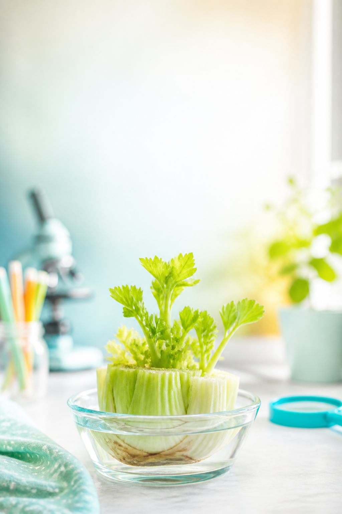

Curious how plants drink water?
Celery
Experiment
Free lesson ✴️
Grab this free celery lesson
Kids set up celery in colored water, slice the stem open, and get real evidence that plants move water through tiny tubes.
What they do
Watch the color climb and see the hidden path inside the stem.
Why parents like it
Simple supplies, pretty payoff, and still feels genuinely science-y.